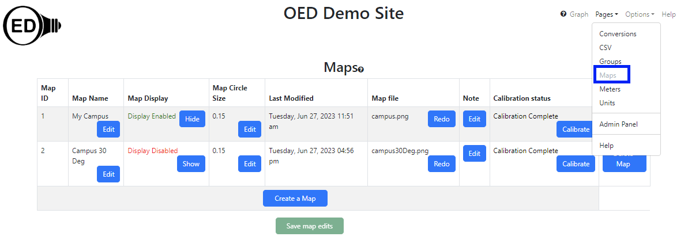
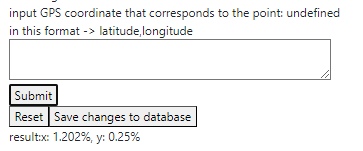
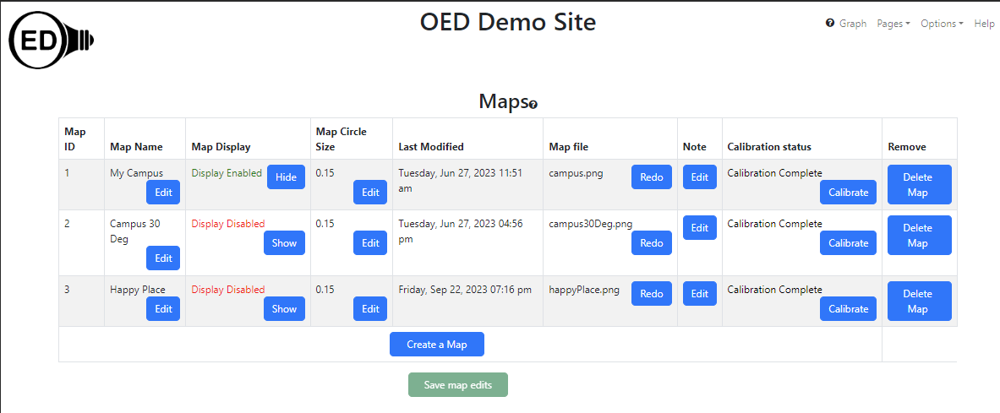
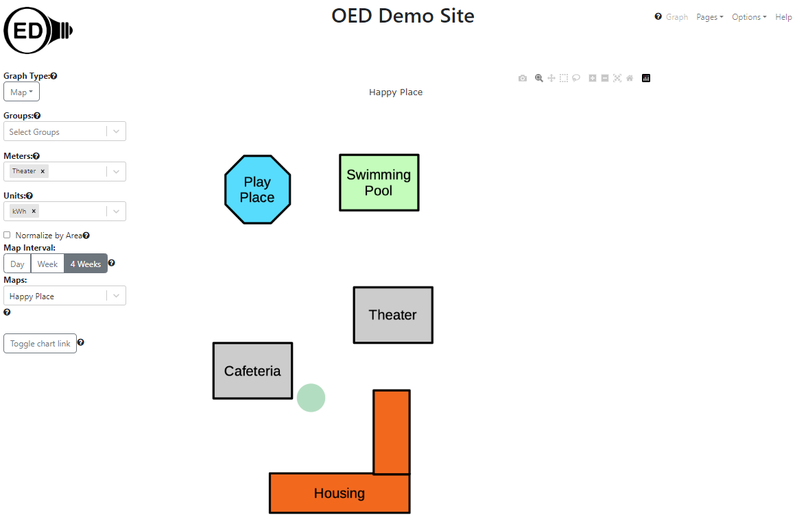
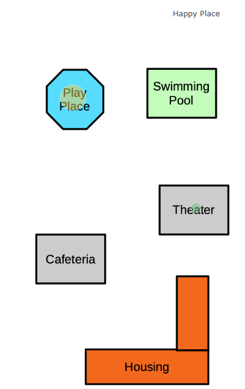

{kind=link}

See the map graphic page for general information on OED and maps. Note that unlike many systems, using maps in OED does not require any additional software nor the use of GIS. Instead, you load a graphical image you want to use as a map. This can be anything from a real map, a stylized graphic with buildings and features of interest to an arbitrary graphic. Once loaded, you calibrate this map by informing OED about a few GPS coordinates for items on the map. OED will automatically allow users to place meters on a graph as long as you have input the GPS data for that meter. OED allows sites to have as many maps as they wish and maps can overlap. For example, you could have maps with two different sites and a map that zooms in to show details of one of the sites.
This greatly simplified system is based on a simple assumption that the map is flat. In actuality, the world is a sphere so that it is curved. However, over modest distances, it is effectively flat. This is why local maps don't appear warped but ones of the entire global make some areas look much larger than they really are. Since most maps involving a site are over very modest distances this works very well. If you want a large geographical area map then see circle placement below on making this work. Note that you can have different maps that are very far apart without any issue. It is only a single map covering a large area that causes issues.
For this system to work, OED needs to know the rotation of each map from true north. This allows OED to align the real world longitude and latitude (used in GPS) with the map graphic. OED internally stores this rotation as the angle from true north on the map graphic to straight up on the map graphic going in the counterclockwise direction. OED can then use this angle to properly calibrate the map and place items on the map (see below).
The admin map page allows admin users to see all information on maps on an OED site. It is accessed from the "Pages" dropdown menu by clicking "Maps" as shown in the following figure (highlighted in the blue rectangle where "Maps" is grayed out since it has already been clicked).

This shows the page when two maps are on the site. Click the blue "Create a Map" button to begin the process of uploading a map to see the page in the next figure. Click on the "Choose File" button (highlighted with a blue box) to open a standard web browser popup to select a file. Choose the graphical image of the map. Note the image can be of types JPEG or PNG (the file extension does not matter but the contents must be one of these two image types). OED will allow one to choose other types of files and will state the upload is complete but the file image does not appear on the next step. There are many programs/apps to convert to one of these two types of graphical images. Note that a non-rectangular map that does not have horizontal/vertical edges will be forced into this rectangular shape by OED and parts of the map may be clipped off. After selecting the map image file, use the box immediately below (labeled "Define a name for the map:") to name the map. Note this is the name that a user will see (it can be edited later). The name must be a different name than any other map. If a duplicate name is used then the final saving of the map after calibration will fail (notification given) and the process will have to be repeated. In this example, "Happy Place" was used. (The happyPlace.png image file used.) Finally, input the angle of the map relative to true north. To properly display maps, OED needs to know the vector that points to true north on the uploaded map. This is the clockwise angle between straight up on the map image uploaded and true north. See the discussion on true north angle below for setting this value on a rotated map (angle is not zero). In this example 0 (zero) was used. When ready, click the "Save and continue" button to complete this step.
The confirmation popup that appears is shown below. Click "OK" to continue the process.

The map calibration page should appear and is shown below. This page allows the entry of the GPS coordinates for places on the map so OED can map locations on the map to locations on the globe (world map). Place the curser (appears as a "+" symbol) at the point on the map with known GPS coordinate. As the mouse moves, the x and y coordinates on the map grid change and span from 0-300 in the x-direction and 0-500 in the y-direction. These can be less depending on the aspect ratio of the map since they might be clipped in one direction to make the map fit the grid coordinate system. It is fine to zoom in on a part of the map to allow a finer control and placement of the mouse. In the figure below, the cursor was placed at grid coordinate (277, 461) and then the mouse was clicked. (Unfortunately the image cannot pick up the "+" where the cursor was located.) This point was chosen since in a real situation the GPS coordinate for the top, right corner of the "Swimming Pool" building in the image is (277, 461).

As shown in the figure above, when that point was clicked, a message appeared below the map (inside the blue box used for highlighting) that says "input GPS coordinate that corresponds to the point: x: 277, y: 461 in this format -> latitude,longitude". This confirms that the coordinate clicked was (277, 461). As the message states, one needs to enter the GPS coordinate for this point on the map as a latitude, longitude pair separated by a comma. This is a common format for GPS coordinates but do not include parentheses when you enter the GPS value such as they are written above. Enter the GPS value in the box below this message. For this example, the GPS coordinate entered was 40.00461, -87.99723. The box where this was entered is shown in the next figure.

Once complete, click the "Submit" button below the box for GPS. This leads to the figure below. The text at the bottom of the web browser window, "result: Need more points" (highlighted with a blue box) indicates the result. It is stating that there are too few points to complete the calibration. OED needs a minimum of three points to calculate the error and possibly complete the calibration. Also note that the message will change the GPS coordinate to "undefined" so it becomes "input GPS coordinate that corresponds to the point: undefined in this format -> latitude,longitude" after a point is submitted. This is to indicate that a new point has yet to be chosen.

Now repeat the steps above to enter more calibration points. Click anywhere on the map where the GPS coordinates are known. It is okay to click more than once to replace the point clicked with a new one as long as it is before "Submit" is clicked. See below for suggestions on points to use and how to get the GPS coordinates for points on the map. The other two values used in this example are:
Once at least three calibration points are entered, OED will give an estimate of the overall calibration result as shown in the figure below.
In this example, the result is "result: x: 1.202% y: 0.25%". (Note the points used were deliberately shifted a little bit so a small error is shown.) If satisfied with the result, click the "Save changes to database" button. The result is shown in the next figure where there is now three maps including the one just added. Note that when leaving the page displaying all maps that OED will ask if you want to save changes or not. This is because a new map was added and OED cannot tell the difference between a new map and changes to an existing map's information. It is safe to either leave without changes if no other maps were changed or to save to be careful to leave this page. See below for a discussion of the Calibration Result. If at any time one wants to begin the calibration process again, click the "Reset" button. If the calibration is a little worse than desired, try to add more points to improve the error but this is not guaranteed to work. Once the calibration is saved, the Admin Map Viewing page is shown again. If users should to be able to see the map then make sure "Display Enabled" is shown. It is best to verify that items are showing up in the correct places before the map is revealed to users so it will be disabled after map calibration. A map can be re-calibrated from this page. There are other values one can set and see that are described on the Admin Map Viewing page.

Once the GPS of a meter is set, it can be seen on the map as long as it lies within the map. (See the map graphing page for more information.) If the circle is not showing up at the desired points or is not present, then see the section on circle placement issues below.
This process can be repeated for as many maps as desired.
If the following meters are created and supplied with reading:
Mapping these two meters on the Happy Place map would yield what is shown in the following figure.

To properly display maps, OED needs to know the vector that points to true north on the uploaded map. This is the clockwise angle between straight up on the map image and true north. If the map image is oriented to north at the top then the angle is 0. If not, the angle needs to be determined. For example, suppose the Happy Place map used above was rotated 30 degrees clockwise. This would give the following image:

Let's assume the original map was oriented to true north. The arrow labeled true north shows this direction. The other arrow labeled straight up points directly to to top of the image (and is parallel to the corresponding sides of the image). The pink arrow labeled angle is the angle between the two arrows and the direction indicates the direction of the OED needed angle. In this case the angle is 30 degrees from straight up to true north. One would enter this value for the angle when inputting the map. Note that the GPS coordinates entered for any meter or group is the actual one and is not changed by this rotation angle.
Note that normally the map image is rectangular and oriented to how people view the organization in this map. Thus, the map image is not normally rotated and was done here for example purposes. Instead, use the angle to tell OED what is going on.
So, how can one get the angle needed? Sometimes the person or group that created the image of your organization knows this value, esp. if it was created with a GIS system. If not, one can use a mapping program on the web (such as Google Maps). These generally put true north at the top. If you take a screenshot of the area on the mapping program used, one can then rotate the image until it aligns with the one you want to upload into OED. The angle that you needed to rotate the map is the value OED needs. Please note that some graphics programs/descriptions rotate the image and some rotate the coordinate system so care should be taken when getting the value from a graphics program. These values are just negatives of each other so checking if it follows the image above tells if it needs to be negated the angle value. If the graphing does not produce the desired result, one may need to adjust this angle. Note that OED expects an angle between 0 and 360 so if the angle is negative adding 360 to make it positive will be the correct value.
OED uses the distance between calibration points to determine the quality of the points (called the "result" above). Spreading the points around the map increases the distance between the points. This is more likely to lead to correct placement of points around the entire map. If possible this should be done but not if it means using less accurate GPS values for each calibration point entered.
The GPS value of the calibration points can be determined in any way. A way that is often accurate and easy is to use an online mapping site that contains an image that shows the same points that are contained in the map image used in OED. Then click on that point on the map to get the GPS value. While OED does not endorse any particular online map, a popular one is Google Maps. With this one can right click on any point on a map to reveal information about that point. The first one is the GPS coordinates. If one left clicks on the GPS coordinate it will copy it to the clipboard. Then paste this value into the OED box to input GPS coordinates during the calibration steps described above. Another technique is to physically go to the point on the map and use a cell phone application that shows the current GPS location. Whatever technique used, it is important to get accurate values so the calibration is of high quality.
OED gives a result that provides an idea of how far off the calibration points are from each other. This gives an idea of how accurately OED will place circles on the map. For example, three calibration points were entered on the map above where each one was changed by +/- 0.0001, which changes in the 6th digit. This was done so the first calibration point had latitude and longitude increased by this amount, the second decreased by this amount and the third had latitude increased and longitude decreased by this amount. As such, it was somewhat random if the value increased or decreased. These changes were done by using the "Calibrate" button on the admin map viewing page so the map did not have to be reloaded into OED. The values used for the map calibration were:
This lead to a result of "result: 7.259%, y: 9.312%". Compared to the map above with the more accurate calibration points, the circles in the following figure have moved a little but are in the correct general place.

If the each value is changed +/- 0.001 as done above then the result is much worse. The values used for the map calibration were:
The result is "result: 40.234%, y: 97.975%". The result of mapping is shown in the next figure where both are noticeably off.

If the change was increased even further then the circles would shift even more and might eventually be off the map. When placement is poor, the map needs to be re-calibrated.
Note that the error may not always indicate how poor placement will be. If every point was shifted a positive amount of +0.001 then OED will not find an additional calibration error due to the systematic shift but items placed on the map will be changed (assuming there is no a similar error in where meters are located). The values used for the map calibration were:
This example gives a result of "result: 1.202%, y: 0.25%" which is the same small error as the original example. The resulting map graphic is shown in the next figure. Here the "Play Place" meter is no longer on the map.

There are many possible reasons that the calibration might be off and we discuss several now. First, it is easy to type in the wrong value for a point. If this happens then correctly reentering the calibration values again will fix the issue. Second, a value for a calibration point is wrong. While a similar result to the first issue, it means rechecking each point to see which one(s) might be off. Third, the accuracy of the points is too low. This requires using another technique to get the values. This can happen, for example, if the map used to get the GPS coordinates has features placed at a different location than on the map you uploaded to OED. It could also happen because manually read GPS values (such as going to a place and using the value shown of a cell phone) are off. This is due to the inherent accuracy of the device in getting the GPS coordinate or standing in the correct location. Finally, it is possible that the true north angle is off. This will generally lead to items not showing up on the map and/or being off across all meters/groups. While many issues can happen, the OED project found that getting the correct value is usually possible and led to good placement on the map. Getting a good calibration is the easiest way to place items on the map. See the next section for ideas on fixing poor placement of the circles on the map.
If the best possible has been done to calibrate the map but circle(s) are still in the wrong place then fixing them manually in the meter GPS value is an option. OED only uses the GPS value for placing items on maps so fudging this value does not have other consequences or lead to incorrect results. This is usually easiest if the circles are reasonably close to the desired location on the map. Going back to the first calibration error example where it was +/-0.0001, it is seen that both meters are a little low on the map. Looking at GPS values for this map indicates that as the latitude gets larger the placement goes up (and as the longitude gets smaller (more negative) the placement goes left). Given small changes in GPS value can have large effects on a small map, the latitude was changed by +0.0005 so the new meter values are:
By using the Admin Map Viewing page, the GPS values were changed. This moved both meters much too far up. Next a latitude shift (from the original values) of +0.00007 was tried so the new values used were:
This was still too high but much better as shown in the next figure.

Finally, the latitude was shifted by +0.000015 to give:
This was pretty good as shown in the next figure. Some more adjustment could have been made if desired. This does show that very small changes in GPS values can have large shifts on a small map.
One thing to note is that this process is only done once when a new map is loaded. After that, any user will see the correct result. Also, once you move one point on the map it becomes clearer the amount needed for other circles so it usually takes less time.
There are circumstance that can make it impossible to modify the meter GPS to get it in the correct place on the map. One is if the needed correction means the GPS value goes outside allowed values then OED will not allow the entry of this GPS value. This should only happen if the calibration is off significantly and should be rectified if the map calibration is redone with greater accuracy. A second is if two maps overlap in area so changing the GPS of a meter causes one map to be fine but another now has it in the wrong place. Proper calibration is the solution in this case.
While all these examples were for meters, the same ideas apply equally to groups.